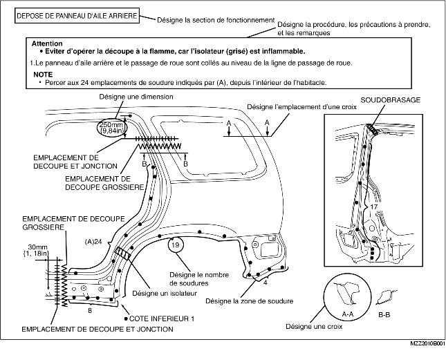
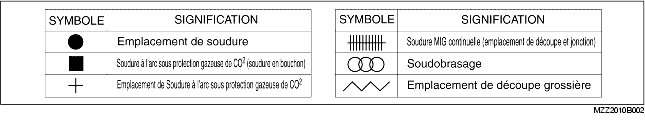
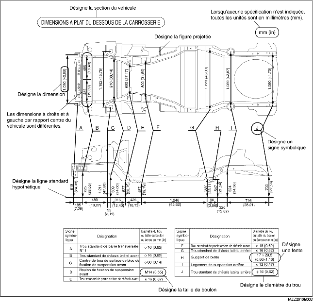
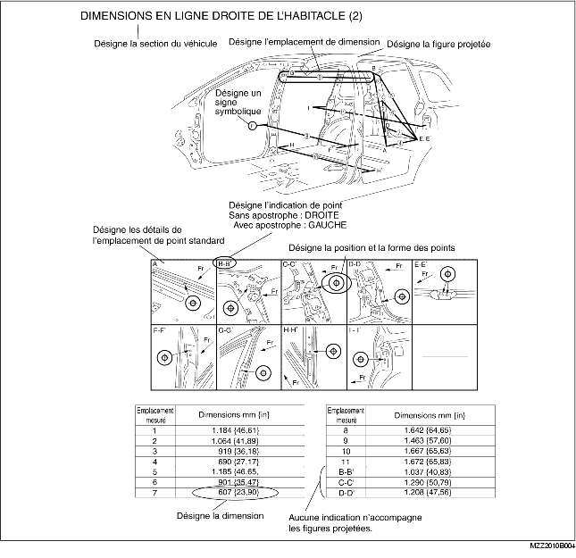
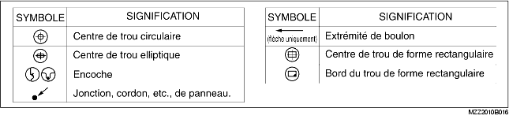

• La présente section comprend des informations sur les panneaux de carrosserie en ce qui concerne les types de soudure, le nombre de soudures par points et les emplacements des découpes/jonctions qui sont nécessaires pour la dépose et la repose des panneaux.
• Le type et les emplacements des soudures sont indiqués par des symboles.
• Certaines sections disposent de notes concernant l'opération en cours. Lisez attentivement et soyez sûr de bien comprendre les notes avant de commencer une procédure.
Exemple

• Les 6 symboles suivants indiquent le type de soudure qui est utilisé lors du remplacement de panneaux de la carrosserie.

• Les dimensions à plat sont les dimensions mesurées en projetant certains points de référence sur une surface plane.
• En l'absence d'indications spécifiques, les points et dimensions standard sont symétriques par rapport au centre du véhicule.
• Les lignes hypothétiques peuvent différer en fonction du modèle de véhicule.
Exemple

• Les dimensions en ligne droite sont les dimensions réelles entre deux points standard.
• En l'absence d'indications spécifiques, les points et dimensions standard sont symétriques par rapport au centre du véhicule.
Exemple

• Les 8 symboles suivants indiquent les points standard.
